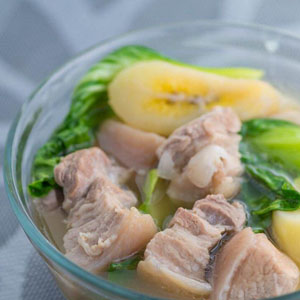
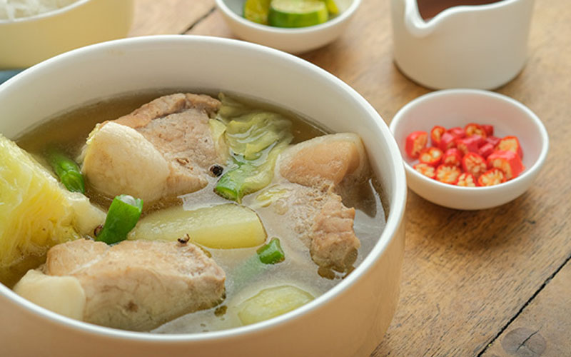

Local Dishes Recipe 8:
Pork Nilaga
- Dish Description:
- Pork Nilaga is a type of Filipino pork soup in clear broth. I used pork belly in this version along with other ingredients such as potato, saba banana, and pechay (or baby bok choy). It is a perfect dish that you can enjoy during cold and rainy weather. In this nilaga version, I added Knorr Pork Cube to provide more flavor to the dish. I suggest that you serve this hot with a small bowl or saucer of fish sauce (with chili pepper if you prefer it a bit spicy) on the side.

Ingredients:
- 2 lbs. pork belly cut into cubes
- 1 Knorr Pork Cube
- 3 to 4 small potato peeled and sliced in half
- 2 pieces ripe saba banana sliced
- 6 to 8 ounces pechay or bok choy
- 1 medium yellow onion sliced
- 6 to 7 cups water
- 1 tablespoon whole peppercorn
- 2 to 3 tablespoons fish sauce
Directions:
- Pour water in a cooking pot. Let boil.
- Add onion and whole peppercorn. Continue to boil until the onion becomes tender.
- Put the pork belly into the cooking pot. Let the water re-boil.
- Add the pork cube. Stir. Cover the pot and continue to cook in low heat for 45 to 60 minutes or until the pork gets tender.
- Add potato and saba banana. Cook for 5 to 7 minutes.
- Add the fish sauce and pechay or bok choy. Stir. Cook for 3 to 5 minutes.
- Transfer to a serving bowl. Serve.
- Share and enjoy!